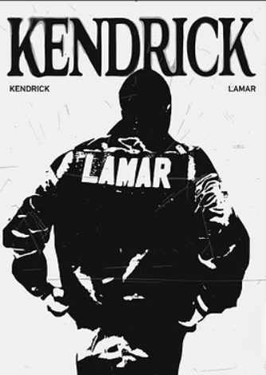

Kendrick Lamar Duckworth, born on June 17, 1987, in Compton, California, is one of the most influential rappers of his generation. Growing up in a city known for its struggles with crime and poverty, Kendrick turned his experiences into powerful music that addresses social issues, personal struggles, and the African American experience.
He gained national attention with his 2012 album good kid, m.A.A.d city, which combined storytelling with a cinematic depiction of life in Compton. Kendrick is known for his complex lyrics, innovative flows, and ability to blend personal narratives with larger cultural themes. Albums like To Pimp a Butterfly and DAMN. have earned critical acclaim and multiple Grammy Awards, cementing his reputation as a leader in modern hip-hop.
Beyond music, Kendrick Lamar is praised for his activism and for using his platform to highlight social justice issues. His work continues to inspire young artists and listeners worldwide, making him a defining voice in contemporary music.